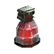
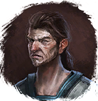

Живица
Предметы / С врагов
Открыть в интерактивной вики →
| Вес | 4 |
|---|---|
| Цена | 65 |
Описание
Компонент, используемый для изготовления
Компонент, используемый для изготовления Циановый элемент. Его создает
Циановый элемент. Его создает  Фрахлумп в Алариле.
Фрахлумп в Алариле.

Большая Фляга Здоровья. Её создает
Рентор в Горах Колдов.Компонент, используемый для изготовления
Циановый элемент. Его создает Фрахлумп в Алариле.| Ингредиент для изготовления Большой фляги жизни. Изготавливает Рентор в Горах Колдов. |
Дроп


Применение
|
Как добыть
Получаем за победу над:
|